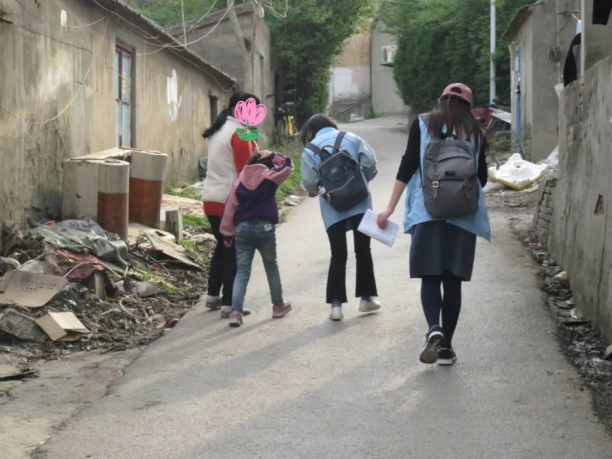
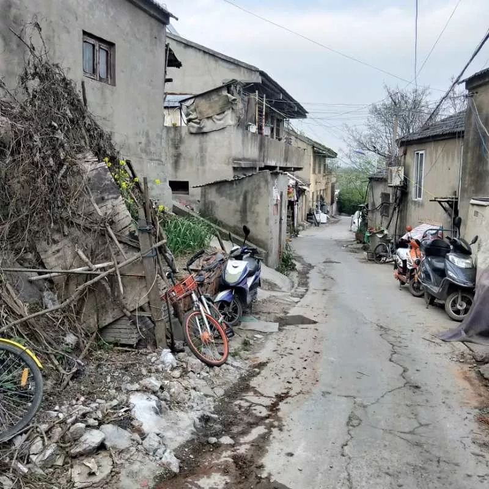

疫情下的深呼吸 | 没办法，得出去啊
原文链接 备份链接 本文是协作者在“农民工抗疫救援行动”中，针对困境农民工家庭开展的个案访谈之一，旨在快速识别疫情中的脆弱人群及其需求，为疫情防控和救援工作提供参考，我们整理出来与你分享。 疫情下的深呼吸 ——困境农民工家庭个案实录（六） …
本文是协作者在“农民工抗疫救援行动”中，针对困境农民工家庭开展的个案访谈之一，旨在快速识别疫情中的脆弱人群及其需求，为疫情防控和救援工作提供参考，我们整理出来与你分享。

疫情下的深呼吸
——困境农民工家庭个案实录（五）
*我们也不知道该怎么办，只能等了*
口述者：范芸（化名）/河南籍
打工所在地：南京
编者按：范芸，56岁，患有脑梗、高血压，独自带着9岁的孙女小语在南京生活。小语的父母在小语9个月大的时候离婚，妈妈离开了家，爸爸常年外出打工。几年前，范云的丈夫也离家出走，至今未归。范云靠在饭店洗盘洗碗的打工钱，以及小语爸爸每月寄来的300元生活费，维持着祖孙两人的生活。
我来南京有9年了，是小语8个月大的时候过来照顾她。我的儿子和儿媳（小语爸妈）离婚了，对我儿子影响很大，原本他只是吸烟，但孩子妈妈离开后，他就经常喝酒，半夜不睡觉，出去不回家。我带着小语去找到他，他会说“妈，你回去吧，我没事”，“妈，你不要管”，时间长了，我也管不了，后面孩子爸爸就去杭州打工，离开了这里……
我在一家小餐馆上班，洗碗洗盘子，每个月挣个两千块钱，是私人做的，他让我过去帮个忙，每个月开点工资。今年7月份到期的（合同），但过了年，他没给我打电话，我也没打，不知道还能不能干。我眼睛老花，不带眼镜看不见，腿也不好，走路不太方便，有时候打嗝不舒服就喝白开水，有点高血压，但这些身体毛病都没有去医院检查——说实话，太贵了，不敢去。

▲ 协作者社会工作者探望范芸和小语（拍摄于2019年春季）
今年我们没有回老家，好几年没回去了，回一次老家不容易，拖家带口的，一来一回又要花好多钱。关于疫情，是通过协作者你们发的消息了解的，还有微信群里朋友说的，亲朋好友也都发了，说外面都堵起来了，不要出门，周边社区也在手机上发了消息。现在知道要出去戴口罩，在家里多开窗通风，勤洗手，口罩也会用，戴铁条的地方往鼻子上一按就行了，用几个小时再换，（换下来的）要丢到垃圾桶里。病毒主要是通过打喷嚏、咳嗽传播的。得了这个肺炎以后会发烧、胸闷、浑身酸痛，要及时到医院去查。家里有一二十个一次性口罩，消毒水没有，以前在超市买，5块钱1包。昨天我想再买几个都没有了。这几天就出过一次门，昨天晚上家里没菜了，去买点菜，我到超市，买的萝卜，3块钱1斤，原来1块钱1斤，翻了好多倍。
现在这个肺炎，我挺害怕的，因为这个病太严重了。“非典”那时候我还在老家，孩子都还小，那个时候还都没手机，就村里面讲“非典”来了，都不要出门，也都呆在家里，那时候没有口罩，就门口弄点石灰撒到屋里面消消毒，床下撒撒。那时候关于没有手机，就听人家讲，来了解情况，现在看手机就能看到。

▲ 范芸住的出租屋（拍摄于2019年春季）
孩子学校也通知延期开学了，延到2月17号，原来是2月8号的。学校通知说不要出门，把门窗开开，出门戴口罩，让小孩写作业。通知几乎天天发，发了好几天，这两天没让她出门，让她在家里写作业。她说，要去后面山上玩，我说外面有病菌，要带口罩不能出去，她懂，就不去了。我就在家做饭，看看小孩写字，洗个衣服。
现在外面都没有人，都不敢出去。如果疫情一直持续一两个月的时间，对生活的影响就很大了，一家人还要生活，孩子的上学，吃穿都成问题。主要是吃的方面，像我们这样，本来工资就少，还有房租、水电费要交……我们也不知道该怎么办，只能等了。
社会工作者手记
访谈中，能感受到范芸对于突如其来的疫情感到害怕，以及为工作，为孩子的学习和每一天的吃穿发愁。家庭支离破碎，只有和孙女相依为命，说起孩子的父母，说起丈夫，无助与心酸，让范芸泣不成声。孙女，在范芸的生活里，既是动力，也是希望。
服务建议：
当下：
1．定期跟进家庭近况，给予奶奶和小语心理慰藉和情感上的支持，为家庭提供基本防护和生活物资支持。
2.进一步了解孩子的学习、心理等情况，鼓励其参与协作者在线服务；
3.了解家庭下一步的生活规划，跟进奶奶复工情况，给予疫情期间相关的劳动保障咨询或就业信息资讯，确保家庭能在疫情期间或结束后，步入正常的生活轨道。
长远：
1.链接医护志愿者定期为家庭提供健康咨询指导､体检服务和就医资源；
2.疫情结束后，继续为小语对接陪伴天使服务，辅导其学习，提升学习成绩，给予心理支持；
3.与小语父亲沟通，督促父亲承担起孩子的监护照顾责任；
4.继续提供助学救助。
（更多个案故事与个案报告见微信公众号“协作者云社工”，转载请在公众号后台留言与协作者联系。）

加入协作者之友
欢迎您加入协作者月捐计划，成为协作者之友！您稳定的非定向捐赠将会支持到协作者的全部公益服务、场地房租以及人力成本。您的稳定捐赠可以让职业社会工作者没有后顾之忧地投入服务中，更独立自主地回应服务对象最紧迫的需求。您的捐助也将帮助协作者更好地将服务经验转化为研究成果，推动不同人群的相互理解，共同建设一个更美好的社会。

查阅往期链接，阅读更多个案故事：
查阅往期链接，了解更多协作者抗击疫情信息：
协作者致打工朋友的一封信（二）| 疫情期间，如何面对返城务工

协作者云社工

长按二维码，识别关注协作者云社工
说明：“协作者云社工”微信公众号发布内容，除特别说明外，均为原创，使用文中内容请注明出处及作者，否则将追究相关责任。
原文链接 备份链接 本文是协作者在“农民工抗疫救援行动”中，针对困境农民工家庭开展的个案访谈之一，旨在快速识别疫情中的脆弱人群及其需求，为疫情防控和救援工作提供参考，我们整理出来与你分享。 疫情下的深呼吸 ——困境农民工家庭个案实录（六） …
原文链接 备份链接 本文是协作者在“农民工抗疫救援行动”中，针对困境农民工家庭开展的个案访谈之一，旨在快速识别疫情中的脆弱人群及其需求，为疫情防控和救援工作提供参考，我们整理出来与你分享。 疫情下的深呼吸 ——困境农民工家庭个案实录（之 …
原文链接 备份链接 IMF认为，若一切向好的方向发展，中国经济有望从二季度开始恢复正常。近日个别国家和地区确诊病例激增，确诊首例新冠病毒感染病例的国家和地区也在增加，是新感染群体的感染源越来越难以查明？还是疫情传播到了某个新的临界点？ …
原文链接 备份链接 编者按：饶志雄是当代中国社会一个缩影。一个“80后”乡里娃，靠个人奋斗，成长为上海知名学府的学院党委副书记。春运，携妻儿回老家过年。本是衣锦还乡，却遇重大疫情，遇到乡村治理的重大挑战。来自大上海高校的饶书记，以党员志愿 …
原文链接 备份链接 经过这次疫情，我对《我不是药神》这部电影感触特别深。我明白了平时物资储存的重要性，这样在特殊时期才能派上大用场。 口述 | 赵 勐 整理 | 王仲昀 我叫赵勐，干物流行业的。大年初一下午，我一个人在家睡觉。醒来看到微信 …